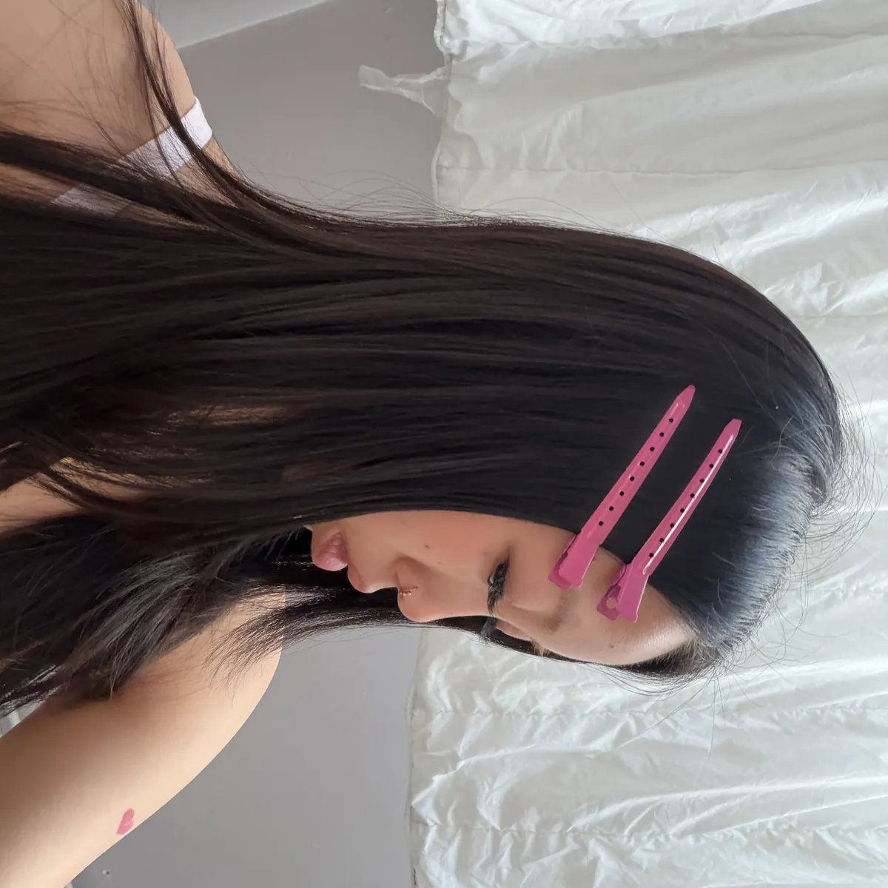
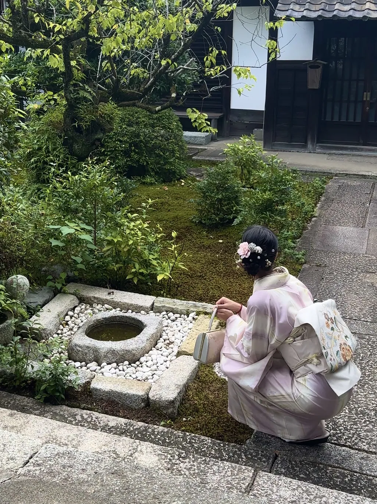
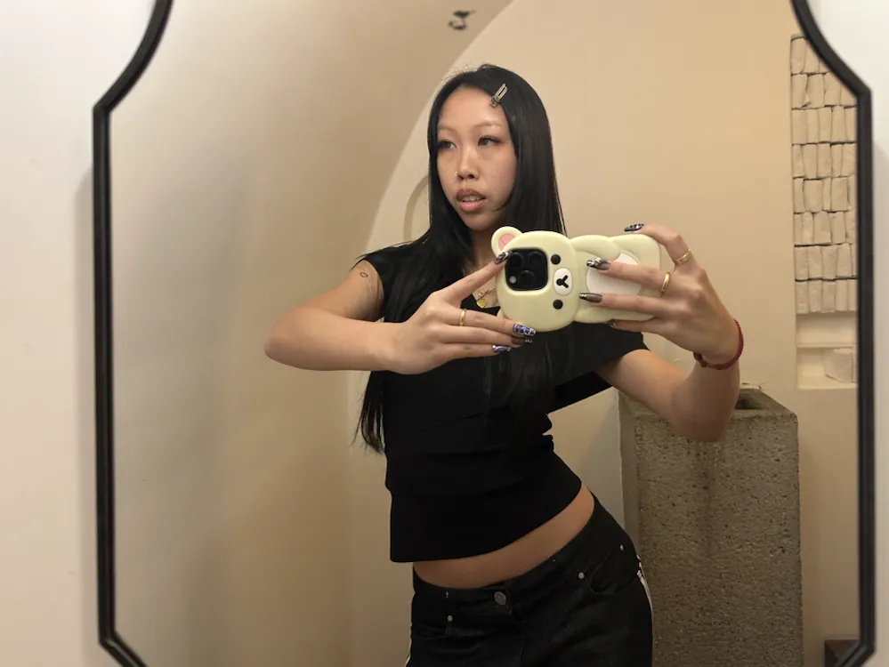
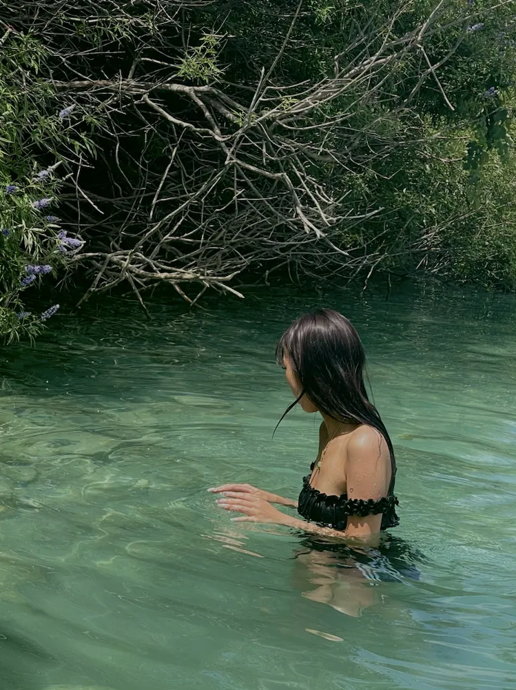
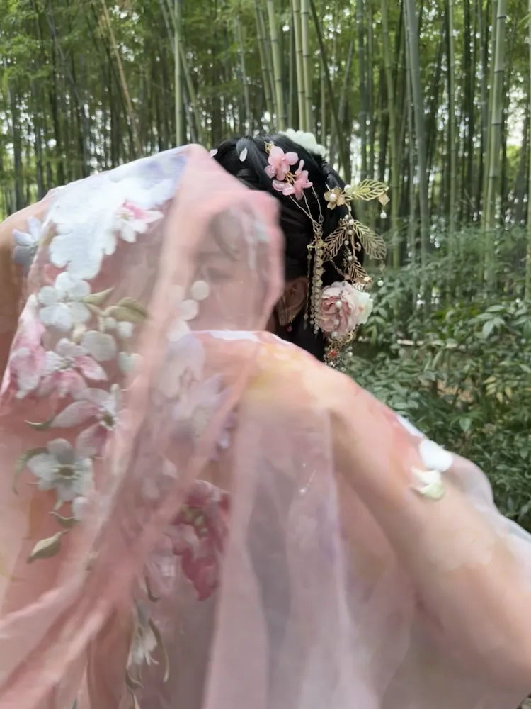
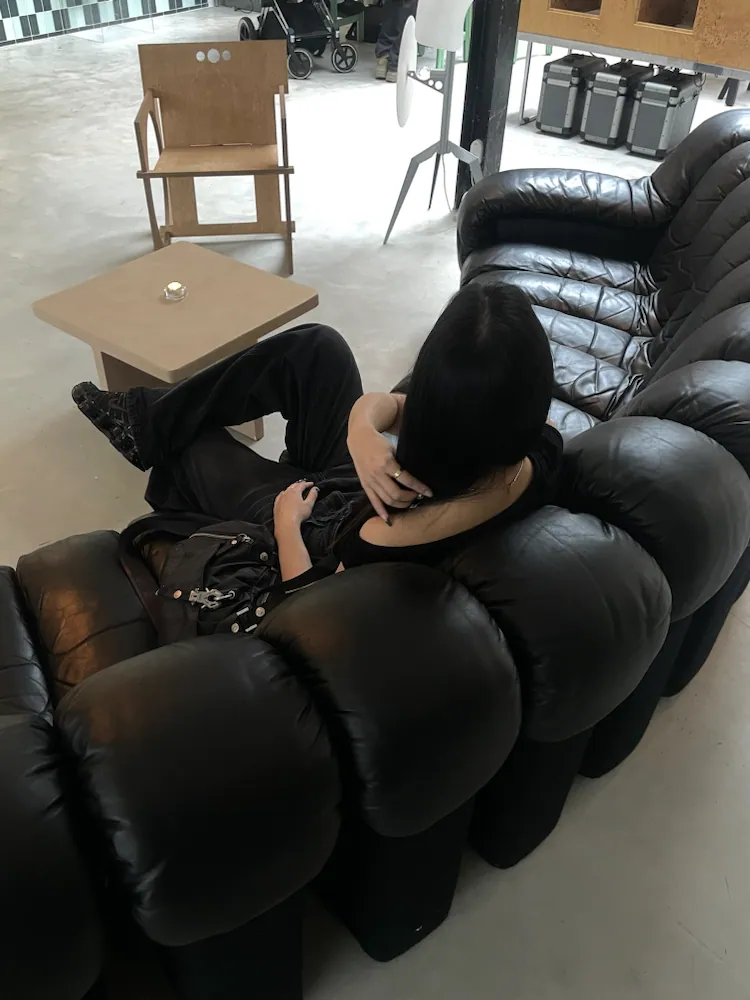
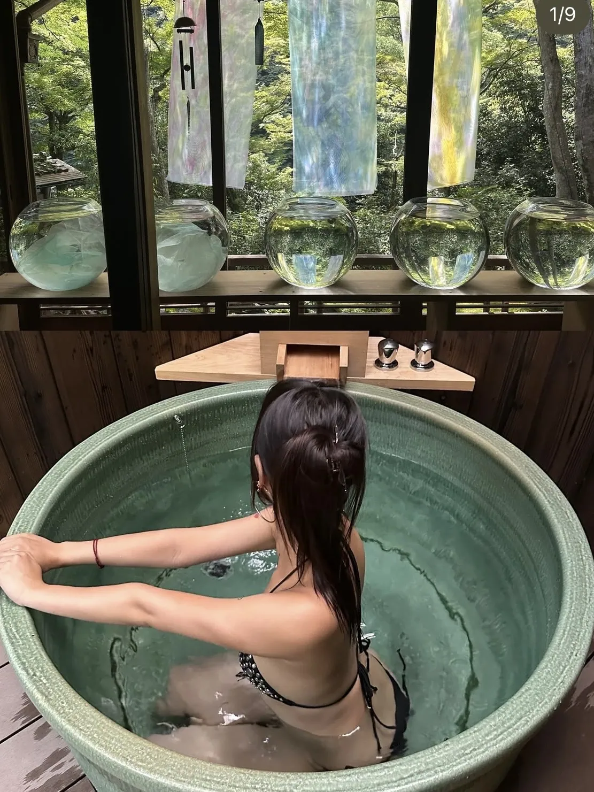
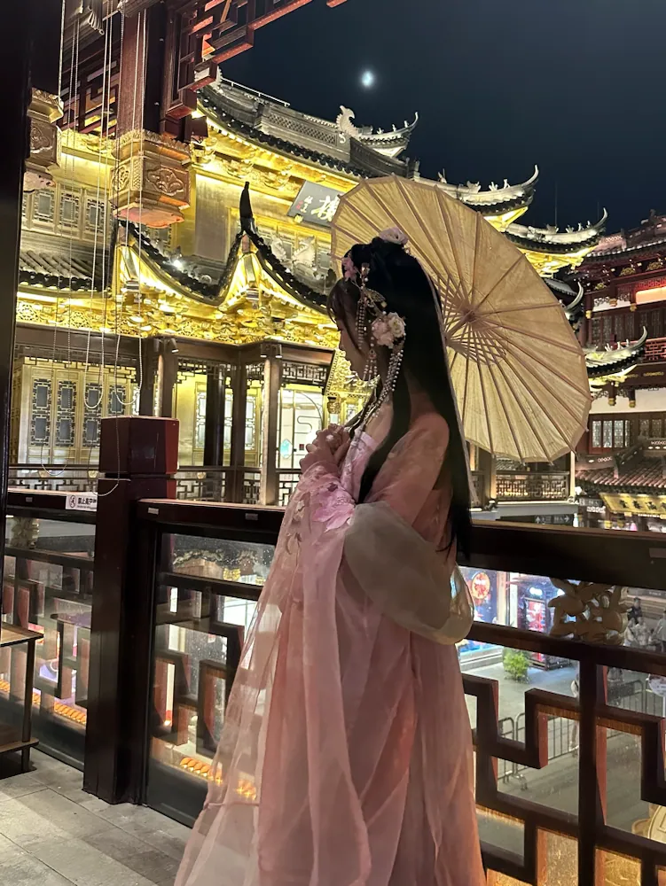
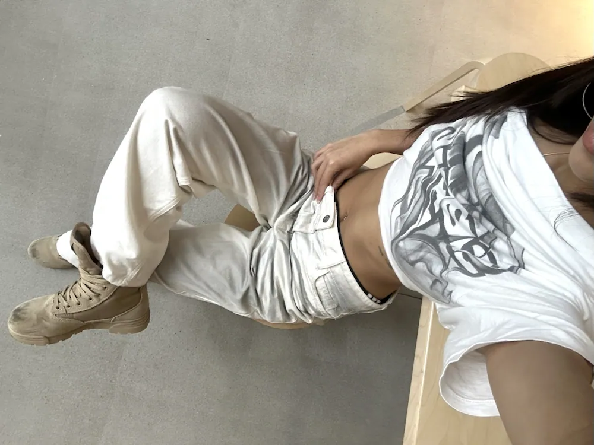
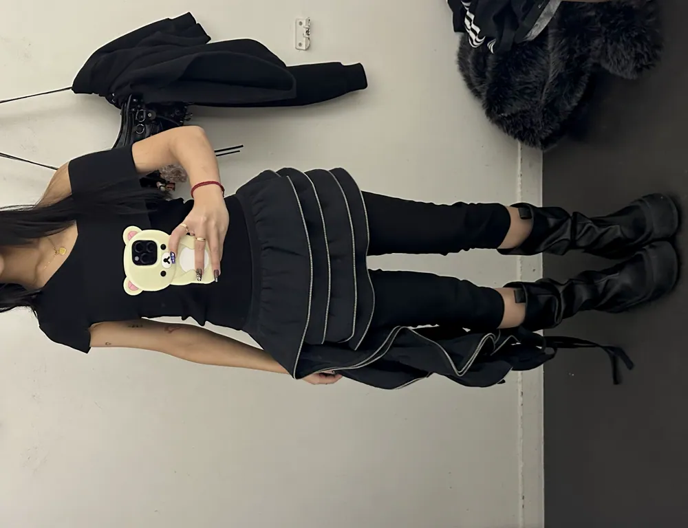

About
In her own words
Shaped by curiosity, informed by culture.

I have a background in communication and multimedia design, increasingly focused on UX/UI and visual design, fashion-informed art direction, and user experience.
My practice is shaped by curiosity and informed by culture, lifestyle, and the many ways creativity appears in everyday life. Influenced by fashion and contemporary visual culture, I approach projects with both aesthetic awareness and strategic intent.
I’m interested in creating digital experiences and visual work that invite interaction and form meaningful connections with people.
- Name
- Jessica Xie
- Study
- Communication & Multimedia Design (CMD)
- School
- Hogeschool van Amsterdam (HvA)
- Based
- The Netherlands
- Practice
- UX/UI, visual design, editorial, graphic design, photography
- Tools
- Figma, Adobe Creative Suite, HTML, CSS, JavaScript, VS Code
- Contact
- jessicaxie01@gmail.com
Disciplines
Contactsheet
From my own camera roll: outfits, textures, places and small details that quietly find their way into what I make.
- 01

02
03
04
05
06
07
08- 09

10
11